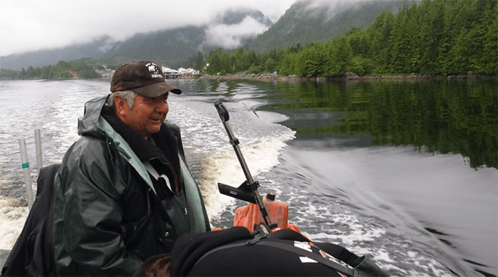
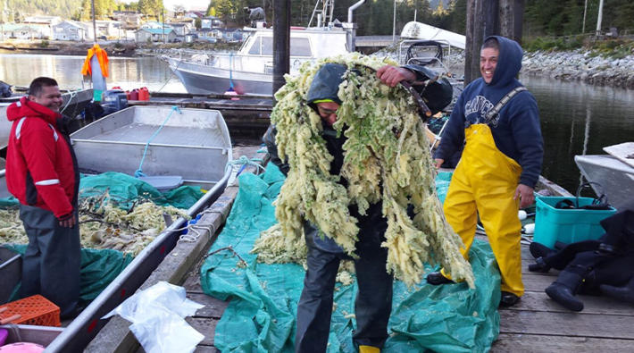

It is March of 2015, and I am on the central coast of British Columbia, Canada, accompanied by two members of the Kitasoo Xai’xais Nation: 71-year-old Charlie Mason, who is a Hereditary Chief also known as Neasmuutk Haimas, and his 10-year-old grandson, Dean Duncan. It’s 39 degrees Fahrenheit and raining hard. Exposed to the frigid downpour, we cruise along in Mason’s aluminum punt, our wake slapping against a rocky shoreline from which forested hills rise to become open mountaintops.
At the end of a narrows where strong currents support a wealth of urchins, sea stars, kelps, and orange sea cucumbers, we pass a beach where my companions’ ancestors had carved animal and human-like shapes into intertidal boulders. As we zoom past, I see the sinuous designs, set on black rock fringed by white barnacles and green bladderwrack seaweed. For me, who grew up in a faraway city and first experienced this coast as an apparent wilderness, the petroglyphs are a reminder that our surroundings are inseparable from human culture.
As we enter Kitasu Bay, the ecosystem role of Pacific herring becomes spectacularly clear. Bald eagles perch on shoreline trees, and from our punt, their white heads look like a nearly continuous dotted line against the dark green canopy. Ravens and crows saunter along the beach, where low tide has exposed rocks covered in herring eggs. Clouds of gulls and large groups of Steller sea lions commingle in the small coves where herring schools roil the water. A winter’s end feast that refuels a plethora of predators.
Humans are unremarkable—just another species obligated to practice respect, gratitude, and reciprocity.
And that is only what we can see above the surface. Underwater, crabs, snails, sculpins, and other small predators, no doubt, are feasting on herring eggs, while Pacific halibut likely are snatching any adults that drop down within their depth range. Mason, of course, knows that herring egg season is a prime time to harvest herring predators. Halibut can be fished most efficiently this time of year, when they move into shallower, nearshore areas to feed on spawning herring.
Our presence here to harvest herring eggs and halibut echoes centuries of seasonal rounds by Coastal First Nations. Mason’s and Duncan’s ancestors used dugout canoes instead of a motorized punt, hooks made of hardwood or bone rather than metal, and lines made from the cured stipes of kelp rather than nylon and cotton. Yet the role of the Kitasoo Xai’xais people in this ecosystem remains the same.
The Kitasoo Xai’xais’ success in managing their ecosystems reflects the wisdom of Indigenous knowledge systems, ways of living that intertwine governance, ceremony, ethics, values, empirical observations, harvesting practices, and other cultural elements that guide the decisions and behaviors of the peoples who give rise to such knowledge. These systems build and adapt across generations. Although they are place-based—inseparable from the people and landscapes to whom they belong—they share key commonalities across diverse cultures. Among them is the view that humans are unremarkable—just another species obligated to practice respect, gratitude, and reciprocity with all other beings—and a nuanced understanding of species interrelationships and local ecosystem changes across time. And critically, Indigenous knowledge systems are more precautionary and holistic than Western science’s approach to many endeavors, including fisheries management. But colonization disrupted Indigenous knowledge and lifeways. And it gave way to approaches that have instead been subservient to the commodification of marine life, negatively impacting Indigenous peoples and simultaneously causing many species to decline.
To be sure, Western scientific methods—such as statistical models and satellite imagery—provide insights that would be otherwise unattainable. For these reasons, a growing number of Indigenous peoples and fisheries scientists are embracing the guiding principle of “Two-Eyed Seeing.” Albert Marshall and the late Murdena Marshall, Mi’kmaw Elders from Atlantic Canada, articulated this principle as “learning to see from one eye with the strengths of Indigenous knowledges and ways of knowing, and from the other eye with the strengths of Western knowledges and ways of knowing, and to using both these eyes together, for the benefit of all.”
As an ecologist who practices the scientific method and who collaborates on marine conservation with Indigenous peoples, I work at the crossroads of different worldviews and ways of knowing. I am out with Mason and Duncan, on that little aluminum boat in the freezing rain, to better understand how seeing with “both eyes” can help all of us find a better way forward.
The management practices Mason shared with me are present-day manifestations of traditions that stretch back centuries.
Prior to European arrivals, Indigenous peoples in what is now known as coastal British Columbia lived in densely populated villages and used sophisticated technologies to fish sustainably for salmon, herring, rockfishes, and myriad other species for at least 2,500 to 7,500 years, probably much longer. These populous societies managed their relationships, intentionally and respectfully, with species that provided nutrition, medicines, and materials, tending forests, seascapes, and harvesting food while enhancing local biodiversity.
Arriving Europeans disrupted these relationships, commodifying marine life and endeavouring to erase or assimilate Indigenous peoples. Residential schools, church-run institutions sponsored by the Canadian government and designed to break up Indigenous families and cultures, were a primary tool of colonization. As commercial fisheries and salmon canneries expanded during the 1800s in British Columbia, Indigenous fishing methods, such as weirs, were criminalized and turned into scapegoats for damage caused by commercial fisheries. A similar history extends to other parts of the world.

FISHING WITH THE CHIEF: Charlie Mason pilots his aluminum punt through waterways once frequented by scores of ancestors in dugout canoes. Photo by Alejandro Frid.
“I always imagine what our world would look like if we were never colonized as Indigenous peoples, if our people were never put in residential schools,” Keshia Moffat, an Indigenous fisheries professional from the Ugpi’ganjig First Nation in New Brunswick, told me while discussing our collaborative research on fisheries management and Indigenous Knowledge systems. “What kind of a world would we live in based on some of the values and perspectives that we bring? We would take a step back, full back, and see the bigger picture, seeing every lens and every point of view, and bring it all together harmoniously.”
Moffat’s words convey why many of today’s fishery impacts on marine ecosystems reflect a social justice problem rather than a scientific problem.
But collaborations between Indigenous peoples and Western scientists are beginning to embrace Indigenous-led frameworks for pairing Indigenous knowledge systems and Western science, which can improve fisheries management. These frameworks can fortify food security and the resilience of ecosystems under climate change and help reconcile historical and current injustices.
Take only what youneed and leave lots for the ecosystem.” A team of Indigenous authors from the Wuikinuxv, Nuxalk, Kitasoo Xai’xais, and Haíłzaqv First Nations in British Columbia, Canada, wrote these words in their 2022 article that I coauthored in support of marine protected areas in their territories. These words distill the approach to fisheries management long taken by many Indigenous communities.
“Fish are these beings that live on our planet, in our water systems,” Ken Paul, an Indigenous fisheries professional from the Wolastoqey First Nation in New Brunswick, Canada, and mine and Moffat’s research collaborator, told me recently. “They are messengers. They carry nutrients and help keep the flow of all the world’s arteries, which are the oceans and the currents, feeding all kinds of other beings,” he continued. “And they’re all part of this complex biodiversity that’s needed to sustain a good life on this planet.”
“We are also part of this ecosystem,” Paul added. “We don’t lord over animals and plants. Plants and animals can depend on us. We do have roles to play. When we forget these roles is when we start getting environmental disasters.”
Indigenous peoples were barred from fisheries decision-making from the onset of colonization, which paved the way for industrial fishing and led to myriad species declines. In recent decades, however, some countries—Canada and Australia among them—have begun to open space for Indigenous peoples to reassert their sovereignty and re-enter management decisions that affect their ecosystems. I have witnessed this process firsthand.
Fish “are messengers. They carry nutrients and help keep the flow of all the world’s arteries.”
For 10 years, I worked as an ecologist with the Wuikinuxv, Nuxalk, Kitasoo Xai’xais, and Haíłzaqv First Nations. My Indigenous colleagues directed and participated in research that they considered necessary to support marine conservation in their territories. Through our field surveys, we examined the effects of fisheries and climate change on rockfishes, Dungeness crab, Pacific herring, kelps, and other species.
My First Nations colleagues took our research outcomes, which provided evidence for species declines in commercially fished areas, to Canada’s federal government, advocating for fisheries approaches that are inclusive of Indigenous knowledge systems. Through these discussions, my colleagues secured commercial fishery closures to protect Dungeness crab, and inserted Indigenous knowledge and governance into the design of a network of marine protected areas. Their victories resembled those of Indigenous communities elsewhere in the world, such as the Vezo and other peoples of Madagascar who, over the past two decades, gained agency over their network of 280 locally managed marine areas.
These victories are significant but not the norm. Even in Canada, Indigenous peoples are still excluded from most management decisions, and many species important to their cultures have declined to small fractions of their precolonial abundances, endangering food security and cultural continuity.
Still, in some places, fisheries applications of Two-Eyed Seeing, or of similar approaches that pair Indigenous and scientific knowledge, are expanding. These include the rebuilding plan for Pacific herring in Haida Gwaii, British Columbia—co-produced by the Haida Nation and Canada’s federal government. This plan weaves together Haida knowledge with rigorous scientific analyses to determine the objectives and management actions required to restore stronger relationships between herring, people, and other species that share the ecosystem. Other examples include the establishment of marine protected areas for bumphead parrotfish in the Western Salomon Islands and the recovery and management of sea cucumbers in Torres Strait, Australia.
The spread of these approaches—and their undeniable successes—might help upend a central, long-standing construct of fisheries management.
For decades, the mainstream scientific approach for managing fisheries has been deceiving many people into thinking of today’s much-diminished ecosystems as “abundant,” sweeping under the rug the ecological vibrancy that preceded industrial fishing. This approach is built on the scientific theory of Maximum Sustainable Yield, established in the late 1950s.
The concept of MSY dictates that fish populations be harvested, on average, to 40 percent of their original abundance. At that theoretical sweet spot, fish are abundant enough to keep the population from collapsing, yet sparse enough to reduce crowding and increase the amount of food available to each individual fish. These conditions enable fish to reproduce successfully and grow faster, constantly replenishing the supply of larger individuals that can be fished at a maximum rate. If you do not fish intensively enough to keep marine organisms at that level, the MSY logic goes, you waste valuable commodities.
But MSY comes at a steep cost. It creates blind spots for the many risks that lurk at the periphery of its reductionist vision. For example, most fishing gear is designed to remove the largest and oldest individuals, which yield more meat and are more desirable to commercial and recreational fishers. When fishing at MSY, that selectivity of the fishing gear can create a scarcity of old and large individuals in the fish population.
Large fish are often top predators. They eat smaller fish, and the organisms that form the diet of smaller fish often thrive when big fish are around, which may promote a larger diversity of species. The loss of large fish, therefore, may alter interactions between predators and prey and disrupt marine food webs. And larger and older individuals—which have the greatest reproductive capacity—also enhance the recovery of fish populations after marine heatwaves or other climate shocks by contributing large amounts of offspring to depleted populations. Importantly, fish tissues contain, on average, about 12.5 percent carbon; if not fished, this carbon sinks to the bottom of the ocean, and much of it is sequestered into sediments, slowing down ocean acidification and helping mitigate climate change. Fishing also reduces the local abundances on which Indigenous people rely for cultural continuity, such as the ability to harvest traditional foods and run youth education programs near their communities.

DECK THE BOUGHS: A traditional Coastal First Nations method of harvesting herring eggs involves sinking hemlock boughs tied to a floating line so that the fish spawn near the branches, their eggs attaching to the plant matter. Photo by Alejandro Frid.
To be fair, the development of MSY helped reduce the pillaging of marine life. Before it, industrial fisheries operated in a Wild West milieu of geographic expansion and unrestrained catches. Marine life was deemed inexhaustible, until it suddenly wasn’t. By the 1930s, strong declines of cod and plaice in the North Sea and of halibut in the North Pacific Ocean awoke British and American managers to the harsh reality, astonishing at the time, that too much fishing could harm fish populations. That rude awakening eventually led to today’s mainstream definition for sustainable fishing limits: Do not exceed the fishing rate that enables MSY harvests.
Yet MSY represents only one, narrow worldview on the relationship between humans and fish.
I recently talked with Dan Okamoto, a fisheries ecologist at the University of California, Berkeley, about the fact that fish in the ocean cannot be observed reliably and, consequently, theoretical estimates of the fishing rate that would enable MSY harvests cannot be verified directly. The implication, Okamoto said, is that “if you slightly overestimate MSY, or the current or future status of a fish population, then you’ll overharvest for a little too long before you know it, and at that point it’s a little bit too late.” In response to these and other criticisms, fisheries models have become better at representing the dynamics of fish populations and determining the risk that MSY estimates might be wrong.
Climate change contributes to that risk. Historically, “fisheries models have used the past to make projections about the future, and if the future is not reflective of the past, that is a real challenge,” Okamoto said. Fisheries models are becoming better at incorporating climate change scenarios yet, Okamoto elaborates, “It’s the equivalent of thinking about war games: How do you predict all the crazy scenarios if you decide to go to war with some other country, all the chaos that can ensue.”
The risk that MSY estimates might be wrong is likely to increase in the future. And despite advances in ecosystem models, scientists and managers still grapple with how to account for how fisheries might affect food webs in which multiple species interact as predators, prey, or competitors. These are among the reasons, Okamoto argues, why some of the most important questions in fisheries today are less about theoretical or statistical models and more about people.
When I asked, “Whatare fish?” Moffat replied: “Fish is my economic livelihood. Fish is what brings my community together. Fish is a part of my family. In some cases where I come from, fish saves people’s lives from suicide or dependence on drugs and alcohol. Fish is just the way of life for me.”
Moffat’s words disarm the MSY paradigm. They also point to the limits of Western conservation approaches, which often emphasize the need to restore greater abundances or some other measure of a healthier ecosystem. This type of thinking is not wrong, but it is incomplete, missing a critical lesson from Indigenous knowledge systems. The most important things in need of restoration, at a broad societal level, are the respectful and reciprocal relationships between people and other species.
And change in that direction, though nascent, is beginning.
In 2021 at a marine conservation meeting I attended, Doug Neasloss, elected Chief Councilor of the Kitasoo Xai’xais Nation, told a story to remind us that social justice and resilient ecosystems are inseparable.
Neasloss spoke of the 2015 signing ceremony of the Marine Planning Partnership, a governance agreement between coastal First Nations and the government of British Columbia that outlined some aspects of marine management from the perspective of Indigenous knowledge systems and Western science. During the ceremony in Victoria, singers and drummers from the ’Namgis First Nation heralded numerous Hereditary Chiefs from different communities onto the stage, where they stood in ceremonial regalia.
Afterward, Doug Neasloss noticed that a Chief from his Nation, the late Les Neasloss, was crying. He went over to comfort him and asked what was wrong. The reason for his tears, this time, was joyous disbelief giving way to awareness that—after nearly a lifetime of having been treated as irrelevant—his people and their vast cultural knowledge of sustainable management strategies were finally being acknowledged and included in decision-making about the practices impacting their vast territory.
A sign that it is entirely possible to bring together Indigenous and Western knowledge and restore reciprocal and respectful relationships between people and the ocean. 
The first part of this piece is adapted from Changing Tides: An Ecologist's Journey to Make Peace with the Anthropocene by Alejandro Frid. Copyright © 2019 by the author and reprinted by permission of New Society Publishers.
Lead photo: Russ Heinl / Shutterstock